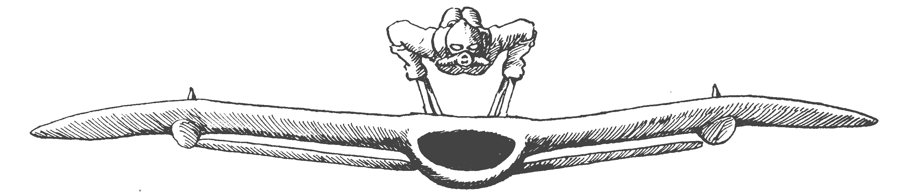
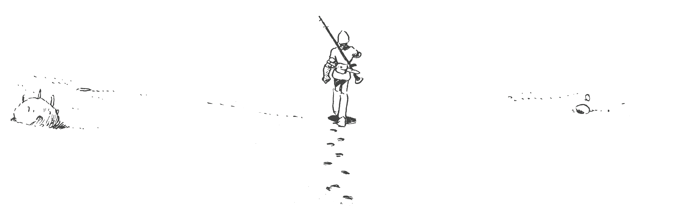

accueil

Longs métrages
- 1986: Le Château dans le ciel - 天空の城ラピュタ - Hayao Miyazaki
- 1988: Mon voisin Totoro - となりのトトロ - Hayao Miyazaki
- 1988: Le Tombeau des lucioles - 火垂るの墓 - Isao Takahata
- 1989: Kiki la petite sorcière - 魔女の宅急便 - Hayao Miyazaki
- 1991: Souvenirs goutte à goutte - おもひでぽろぽろ - Isao Takahata
- 1992: Porco Rosso - 紅の豚 - Hayao Miyazaki
- 1993: Je peux entendre l'océan - 海がきこえる - Tomomi Mochizuki
- 1994: Pompoko - 平成狸合戦ぽんぽこ - Isao Takahata
- 1995: Si tu tends l'oreille - 耳をすませば - Yoshifumi Kondō
- 1997: Princesse Mononoké - もののけ姫 - Hayao Miyazaki
- 1999: Mes voisins les Yamada - ホーホケキョ となりの山田くん - Isao Takahata
- 2001: Le Voyage de Chihiro - 千と千尋の神隠し - Hayao Miyazaki
- 2002: Le Royaume des chats - 猫の恩返し - Hiroyuki Morita
- 2004: Le Château ambulant - ハウルの動く城 - Hayao Miyazaki
- 2006: Les Contes de Terremer - ゲド戦記 - Gorō Miyazaki
- 2008: Ponyo sur la falaise - 崖の上のポニョ - Hayao Miyazaki
- 2010: Arrietty, le petit monde des chapardeurs - 借りぐらしのアリエッティ - Hiromasa Yonebayashi
- 2011: La Colline aux coquelicots - コクリコ坂から - Gorō Miyazaki
- 2013: Le vent se lève - 風立ちぬ - Hayao Miyazaki
- 2013: Le Conte de la princesse Kaguya - かぐや姫の物語 - Isao Takahata
- 2014: Souvenirs de Marnie - 思い出のマーニー - Hiromasa Yonebayashi
- 2016: La Tortue rouge - レッドタートル ある島の物語 - Michael Dudok de Wit (coproduction)
- 2020: Aya et la Sorcière - アーヤと魔女 - Gorō Miyazaki
Courts métrages
- 1992: Sora Iro no Tane - そらいろのたね - Hayao Miyazaki
- 1992: Nandarou - なんだろう - Hayao Miyazaki
- 1995: On Your Mark - オン・ユア・マーク - Hayao Miyazaki
- 2000: Ghiblies - ギブリーズ - Yoshiyuki Momose
- 2001: La Chasse à la baleine - くじらとり - Hayao Miyazaki
- 2002: La Grande Excursion de Koro - コロの大さんぽ - Hayao Miyazaki
- 2002: Ghiblies Episode 2 - ギブリーズ episode2 - Yoshiyuki Momose
- 2002: Mei et le Chatonbus - めいとこねこバス - Hayao Miyazaki
- 2002: Machines volantes imaginaires - 空想の空飛ぶ機械達 - Hayao Miyazaki
- 2006: A la recherche d'une maison - やどさがし - Hayao Miyazaki
- 2006: Monomon l'araignée d'eau - 水グモもんもん - Hayao Miyazaki
- 2006: Le Jour où j'ai cultivé une étoile - 星をかった日 - Hayao Miyazaki
- 2006: La Nuit de Taneyamagahara - 種山ヶ原の夜 - Kazuo Oga
- 2007: Iblard Jikan - イバラード時間 - Naohisa Inoue
- 2010: Les Souris sumo - ちゅうずもう - Akihiko Yamashita
- 2010: M. Pâte et la princesse oeuf - パン種とタマゴ姫 - Hayao Miyazaki
- 2011: La Chasse au trésor - たからさがし - Hayao Miyazaki
- 2012: Un dieu-guerrier géant apparaît à Tokyo - 巨神兵東京に現わる - Shinji Higuchi
- 2018: Boro la petite chenille - 毛虫のボロ - Hayao Miyazaki
Séries
- 2014 - 2015: Ronya, fille de brigand - 山賊の娘ローニャ
Jeux-vidéos
- 1998: Jade Cocoon: La Légende de Tamamayu - 玉繭物語 - PlayStation - Character Design: Katsuya Kondō
- 2010: Ni no kuni: La Vengeance de la sorcière céleste - Nintendo DS, Nintendo Switch, Playstation 3 et 4 - Animations et Character Design
- 2018: Ni no kuni II: L'Avènement d'un nouveau royaume - PS4, PC - Animations et Character Design
